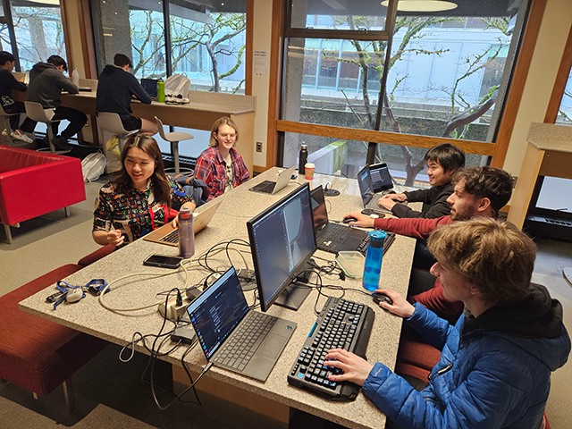
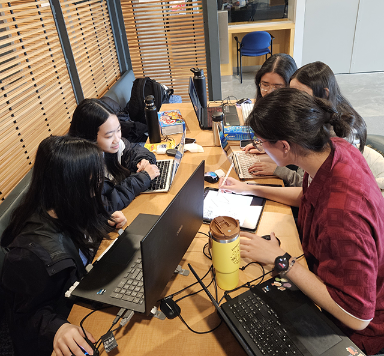
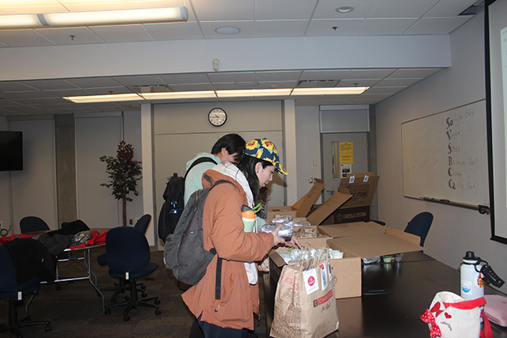
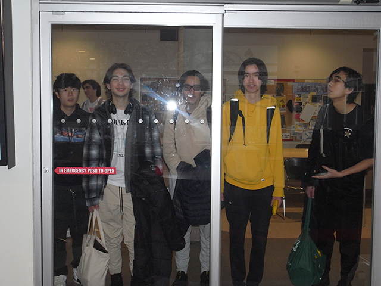

Get ready for... FALL HACKS 2025!
Taking place at SFU Burnaby Campus,
September 27th (Saturday), 8:00AM - 9:00PM.
Brought to you by the Computing Science Student Society.




----------------------------------------------------------------------------------------------------
Frequently asked questions...
Wait, what actually is a hackathon?
A hackathon is an event where teams work on a project inspired by an event-provided theme. You
will have 12 hours to develop something cool at Fall Hacks. Your team will start from scratch
and try to make the coolest thing they can before the time is up.
Where is Fall Hacks?
This year will be in-person and online. We will be streaming the opening and closing
ceremonies on Discord, so if you can't make it in person, join online! Most of the day-of
activities, like registration, will be held in TASC 9204 on SFU's Burnaby Campus. You are free
to hack at other open locations on campus.
Why should I participate?
You get experience with new technologies and navigate teamwork dynamics to accomplish a goal.
Hackathon projects are also a great addition to a resume! There are also prizes and free food.
I am in my first year/don't have much experience, should I still participate?
Yes! This hackathon is a great learning opportunity for people with less development
experience.
Can I work on my previous projects?
No, we want you to create awesome things from scratch in 12 hours. Starting from an existing
project is against the spirit of the event. Existing open-source libraries and frameworks are
fine, of course. Ask an organizer if you are unsure.